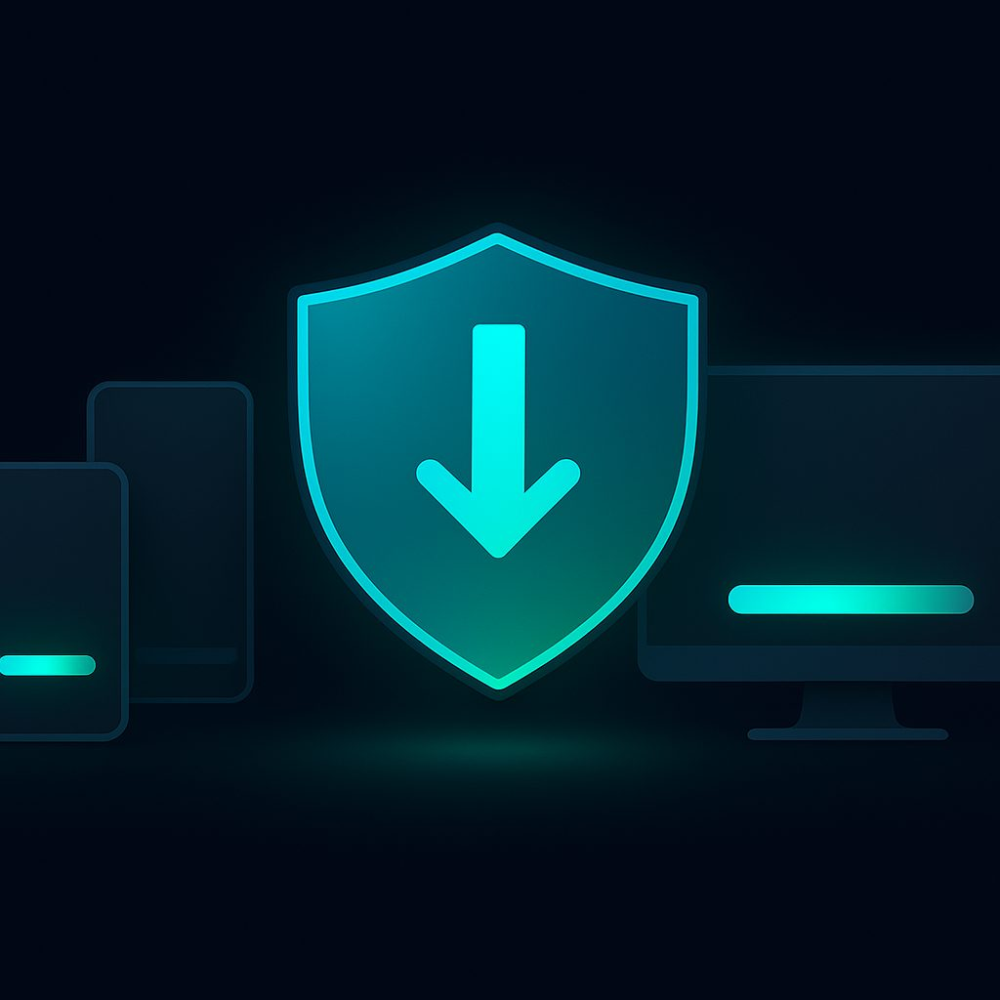

Download VPN Free: Your Comprehensive Guide to Online Freedom
In today's interconnected world, online privacy and security are paramount. A Virtual Private Network (VPN) is an essential tool for safeguarding your digital footprint, bypassing geo-restrictions, and ensuring a secure browsing experience. While many premium VPN services offer robust features, there are excellent free options and free trials available that can get you started. This guide will walk you through where to download free VPNs for various platforms, recommend popular applications, provide installation instructions, and explain how to import subscription configurations, including mentioning NoBorder VPN as a reliable solution for various protocols like VLESS and Shadowsocks.
Why Use a VPN?
- Enhanced Privacy: A VPN encrypts your internet traffic, making it unreadable to internet service providers (ISPs), government agencies, and potential snoopers.
- Increased Security: Public Wi-Fi networks are often unsecured. A VPN creates a secure tunnel, protecting your data from malicious attacks.
- Bypass Geo-Restrictions: Access content and services that are otherwise unavailable in your region.
- Anonymity: Mask your IP address, making it harder to track your online activities.
- Censorship Circumvention: In some countries, internet access is heavily restricted. VPNs can help bypass these restrictions.
Recommended Free VPN Apps and Protocols
While many "free VPNs" often come with limitations like data caps, slower speeds, or even privacy concerns, the applications listed below are often used with free trial subscriptions or self-hosted VPN servers. They are primarily clients for protocols like VLESS, Shadowsocks, and VMess, which are known for their efficiency and ability to bypass sophisticated firewalls. For users seeking a robust and reliable service, exploring options like NoBorder VPN can provide access to these advanced protocols.
- Hiddify (Android, iOS, Windows, macOS, Linux): A popular open-source client that supports a wide range of protocols, including VLESS, VMess, Shadowsocks, and Trojan. It's known for its user-friendly interface and comprehensive features, making it a powerful tool for managing multiple VPN configurations.
- v2rayNG (Android): A highly regarded Android client for V2Ray-based protocols (like VLESS and VMess). It offers advanced routing rules and excellent performance, making it a favorite among users who need to bypass strict internet censorship.
- Streisand (Self-hosted): Not a client app, but a suite of tools that allows you to set up your own VPN server on a cloud provider. It automatically configures multiple protocols including OpenConnect, OpenSSH, OpenVPN, Shadowsocks, and WireGuard. This is for more advanced users but offers ultimate control and privacy.
Where to Download VPN Clients for Each Platform
Android
- Hiddify:
- Download from Google Play Store.
- Alternatively, download the APK from the Hiddify GitHub Releases page for sideloading.
- v2rayNG:
- Download from Google Play Store.
- Alternatively, download the APK from the v2rayNG GitHub Releases page.
iOS
- Hiddify:
- Download from the Apple App Store.
- Shadowrocket (Paid, but widely used for free configs): While not free, Shadowrocket is a very popular and powerful iOS client that supports Shadowsocks, VLESS, and other protocols. Many free VLESS and Shadowsocks configurations are used with this app. Download from the Apple App Store.
Windows
- Hiddify:
- Download the installer from the Hiddify GitHub Releases page. Look for the
.exefile.
- Download the installer from the Hiddify GitHub Releases page. Look for the
- Clash for Windows (Open-source, supports VLESS/Shadowsocks): A powerful multi-protocol proxy client. Download from the Clash for Windows GitHub Releases page. Look for the
.exeinstaller.
macOS
- Hiddify:
- Download the
.dmgfile from the Hiddify GitHub Releases page.
- Download the
- ClashX (Open-source, supports VLESS/Shadowsocks): A macOS GUI for Clash. Download from the ClashX GitHub Releases page. Look for the
.dmgfile.
Linux
- Hiddify:
- Download the appropriate package (e.g.,
.debor AppImage) from the Hiddify GitHub Releases page.
- Download the appropriate package (e.g.,
- Clash for Linux (Command-line or GUI with third-party tools): The core Clash engine is available for Linux. For a GUI, you might need to use third-party wrappers. Download from the Clash GitHub Releases page.
Installation Guides (General Steps)
The installation process is generally straightforward for most platforms. Here's a general guide:
Android & iOS (Mobile Apps)
- Open App Store: Go to Google Play Store (Android) or Apple App Store (iOS).
- Search: Type the app name (e.g., "Hiddify" or "v2rayNG") into the search bar.
- Install: Tap the "Install" or "Get" button. The app will download and install automatically.
- Open: Once installed, tap "Open" to launch the application.
Windows & macOS (Desktop Apps)
- Download Installer: Navigate to the GitHub Releases page (or official website) and download the appropriate installer file (
.exefor Windows,.dmgfor macOS). - Run Installer:
- Windows: Double-click the
.exefile. Follow the on-screen prompts, accepting the license agreement and choosing an installation directory. - macOS: Double-click the
.dmgfile. Drag the application icon to your Applications folder.
- Windows: Double-click the
- Launch App:
- Windows: Find the app in your Start Menu or on your Desktop and double-click to launch.
- macOS: Open your Applications folder and double-click the app icon. You might need to confirm you want to open an app from an "unidentified developer" the first time.
Linux
- Download Package: Download the appropriate package for your distribution (e.g.,
.debfor Debian/Ubuntu, AppImage for universal use) from the GitHub Releases page. - Install/Run:
- .deb: Open your terminal and navigate to the download directory. Use
sudo dpkg -i your-package.deb. You might need to resolve dependencies withsudo apt install -f. - AppImage: Make the AppImage executable:
chmod +x your-appimage-file.AppImage. Then run it:./your-appimage-file.AppImage. - Tarball/Manual: For some apps, you might download a compressed archive (
.tar.gz). Extract it and follow the instructions in a README file, which usually involves running an executable.
- .deb: Open your terminal and navigate to the download directory. Use
- Launch App: Depending on the installation method, the app might appear in your applications menu, or you might launch it from the terminal.
Importing Subscription Configurations (VLESS, Shadowsocks, etc.)
Most advanced VPN clients don't come with built-in servers. Instead, you import "subscription configurations" provided by a VPN service (like NoBorder VPN) or a self-hosted server. These configurations contain the necessary details to connect to the VPN server, including server address, port, protocol (VLESS, Shadowsocks, VMess), encryption methods, and user credentials.
Subscription configurations are typically provided as a URL or a QR code.
General Steps to Import a Subscription:
- Obtain Subscription URL/QR Code: Your VPN provider (e.g., NoBorder VPN) will give you a subscription link or a QR code. This is usually found in your user panel or account settings.
- Open VPN Client: Launch Hiddify, v2rayNG, or your chosen client.
- Find Import Option: Look for options like "Add Subscription," "Import Config," "Scan QR Code," or a "+" icon.
- Import Method:
- Via URL: If you have a subscription URL, choose "Add Subscription via URL" or similar. Paste the URL into the provided field and confirm.
- Via QR Code: If you have a QR code, choose "Scan QR Code." The app will open your device's camera. Point the camera at the QR code to scan it.
- Manual Configuration: Some clients allow manual entry of server details. This is more tedious and prone to errors but useful if no other method is available.
- Update/Refresh: After importing, some apps might require you to "Update Subscription" or "Refresh" to fetch all available server nodes.
- Select Server: From the list of imported servers, choose the one you want to connect to.
- Connect: Tap the "Connect" button (often a large power button icon) to establish the VPN connection.
Example with Hiddify: Hiddify is excellent for managing multiple subscriptions. You typically add a "Profile" by pasting a subscription URL. Once added, it fetches all available servers and protocols (VLESS, Shadowsocks, etc.) from that subscription, allowing you to easily switch between them.
Example with v2rayNG: For v2rayNG, you'll often see a "+" icon at the top right. Tapping it gives options like "Import config from clipboard" (if you copied a VLESS or Shadowsocks link) or "Scan QR code."
Free Trial Information
Many reputable VPN services, including those that offer advanced protocols like VLESS and Shadowsocks, provide free trials or money-back guarantees. These are excellent ways to test a service without commitment.
- Limited-Time Free Trials: Some providers offer a full-featured VPN for a few days (e.g., 3-7 days). You often need to register an account and sometimes provide payment details, but you won't be charged if you cancel before the trial ends.
- Money-Back Guarantees: A common practice is a 30-day (or similar) money-back guarantee. You purchase the service, and if you're not satisfied, you can request a full refund within the specified period. This is effectively a risk-free trial.
- Free Tiers (with limitations): Some VPNs offer a perpetually free tier, but these usually come with significant limitations such as:
- Data Caps: Limited daily or monthly data allowance.
- Speed Throttling: Slower connection speeds compared to premium tiers.
- Limited Server Locations: Access to only a few server locations.
- Fewer Features: Lack of advanced security features like ad blockers or kill switches.
When looking for free VPN options, it's crucial to prioritize your privacy. Be wary of completely free, unknown VPNs that don't have a clear business model, as they might be collecting and selling your data. Always check reviews and privacy policies. Services like NoBorder VPN often provide free trial subscriptions that can be imported into clients like Hiddify, allowing users to experience premium features and robust protocols like VLESS and Shadowsocks firsthand.
Comparison Table: Recommended Clients
| Client Name | Platforms | Primary Protocols | Ease of Use | Advanced Features | Open Source |
|---|---|---|---|---|---|
| Hiddify | Android, iOS, Windows, macOS, Linux | VLESS, VMess, Shadowsocks, Trojan, etc. | Moderate to High (Once configured) | Multi-subscription management, routing rules, advanced settings | Yes |
| v2rayNG | Android | VLESS, VMess, Shadowsocks, Trojan | Moderate | Advanced routing, proxy settings, UDP forwarding | Yes |
| Streisand | Self-hosted (Linux server) | OpenConnect, OpenSSH, OpenVPN, Shadowsocks, WireGuard | High (Requires server setup) | Automated server deployment, multiple protocol support, customizability | Yes |
| Clash for Windows/ClashX | Windows, macOS | VLESS, VMess, Shadowsocks, Trojan, HTTP/Socks proxy | Moderate to High | Rule-based routing, proxy groups, system proxy integration | Yes |
| Shadowrocket | iOS | Shadowsocks, VLESS, VMess, Trojan, OpenVPN | Moderate | Rule-based routing, URL rewrite, DNS spoof | No (Proprietary) |
Practical Recommendation
For most users looking to download a VPN for free, especially those navigating internet restrictions, the best approach is to utilize a robust client like Hiddify on your preferred platform. Pair this with a free trial or a reliable free subscription configuration from a trusted provider. Services like NoBorder VPN are known for offering such configurations, often supporting advanced and resilient protocols like VLESS and Shadowsocks, which are crucial for bypassing sophisticated firewalls. This combination allows you to leverage powerful technology without immediate cost, providing a secure, private, and unrestricted online experience. Always ensure the source of your VPN configuration is credible to protect your privacy and security.